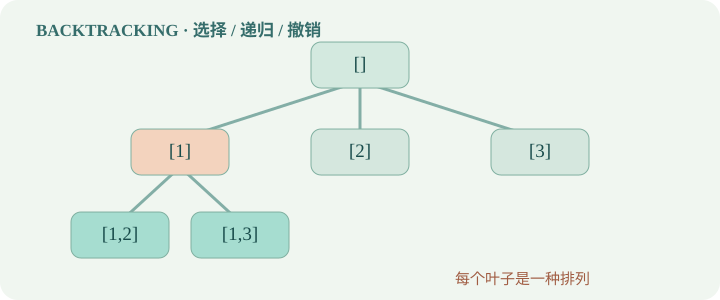
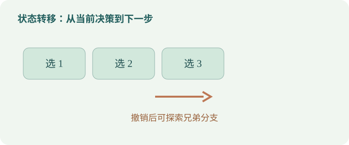
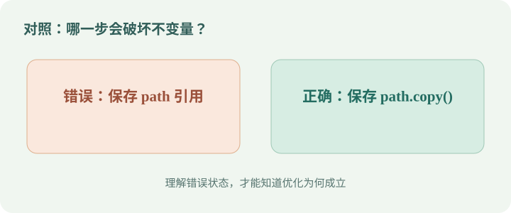

LeetCode 46 · 全排列
从选择到撤销：理解回溯为什么不会漏解或重复
中等 Medium15 分钟Backtracking01 · 题意与直觉
输入 [1,2,3]（题目保证元素互异），目标是生成这三个数所有不同的排列，共 3! = 6 个结果。
直接在脑中列举容易漏掉分支。我们把第 k 位的选择看作决策树的第 k 层，系统遍历每个尚未使用的元素。
下图将算法真正关注的状态画出来，而不是只展示最终答案。

02 · 先说清什么永远不变
进入深度为 k 的递归时，path 恰好含 k 个互异输入元素；used[i] 为真当且仅当 nums[i] 已出现在当前 path。返回上一层后，状态必须恢复成调用前。
每一层依次尝试还未使用的数字：标记 used、放入 path、递归填下一位；返回后先移除 path 末项，再恢复 used。长度达到 n 时将 path.copy() 放进结果。

03 · 自己走一遍算法
每次只观察一项关键决策：哪些元素仍在候选集合、哪些已经可以排除，以及当前答案如何变化。
起点 path=[]、used 都为 False；第一位可以选 1、2、3。
这个轨迹是教学用的关键状态节选，不代表省略其他输入时算法也只执行这些步。完整逻辑以代码为准。
04 · 为什么不会漏掉答案？
任一合法排列都拥有唯一的第一位、第二位直到第 n 位，因此对应搜索树上的唯一根到叶路径；每一层遍历所有未使用值，故所有合法路径都会被访问。used 禁止重复使用，且输入元素互异，因此不会产生相同的排列。撤销保证兄弟分支从相同的父状态出发。
请区分算法的不变量和恰好出现在某个样例中的现象：前者必须对所有合法输入成立，后者只能帮助建立直觉。
05 · Python 参考实现
下面使用 LeetCode 的 class Solution 接口。源代码同时保存在仓库的 solution.py 中，并由确定性测试覆盖主要边界。
class Solution:
def permute(self, nums: list[int]) -> list[list[int]]:
result: list[list[int]] = []
used = [False] * len(nums)
path: list[int] = []
def dfs() -> None:
if len(path) == len(nums):
result.append(path.copy())
return
for i, value in enumerate(nums):
if used[i]:
continue
used[i] = True
path.append(value)
dfs()
path.pop()
used[i] = False
dfs()
return result
时间与空间复杂度
| 维度 | 分析 |
|---|---|
| 时间 / 空间 | 共有 n! 个叶子；复制每个完整排列需要 O(n)，总时间 O(n·n!)。回溯路径、used 和递归栈额外 O(n)，不含输出；保存全部结果需 O(n·n!)。 |
| 算法范围 | 上述结论以官方输入语义与 Python 常规操作成本为前提；本地演示不代表 LeetCode 排名或运行时百分位。 |
06 · 一张图记住易错点
如果使用 result.append(path) 而不复制，所有结果都会引用同一个不断变化的列表，回溯结束后看到的通常都是空列表。另一个常见错误是忘记撤销 used 标记，导致后续兄弟分支不可选。

回到原题与进一步练习
先独立复述一遍不变量和正确性推理，再到官方页面提交代码。检查边界用例后，尝试修改输入并预测演示的状态变化。